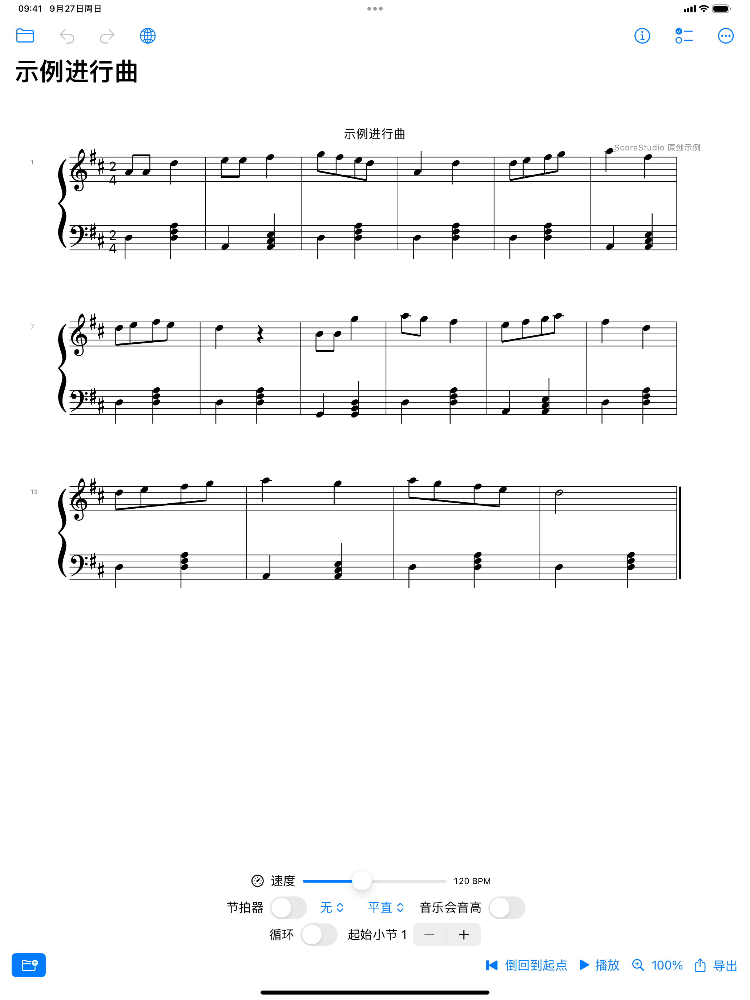
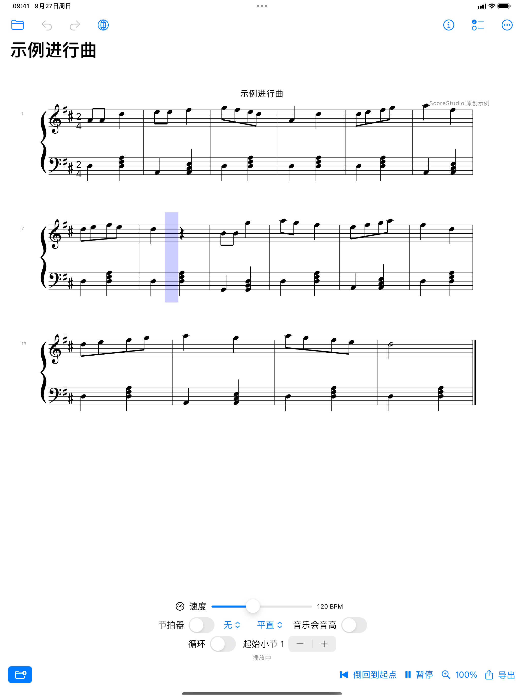
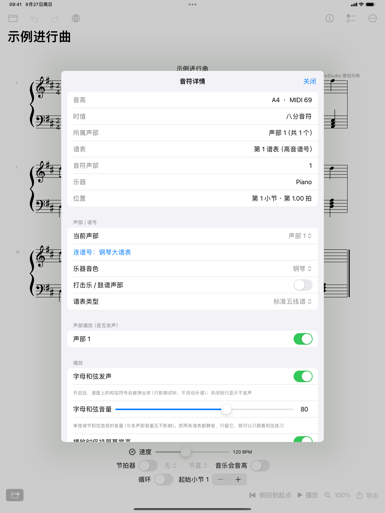
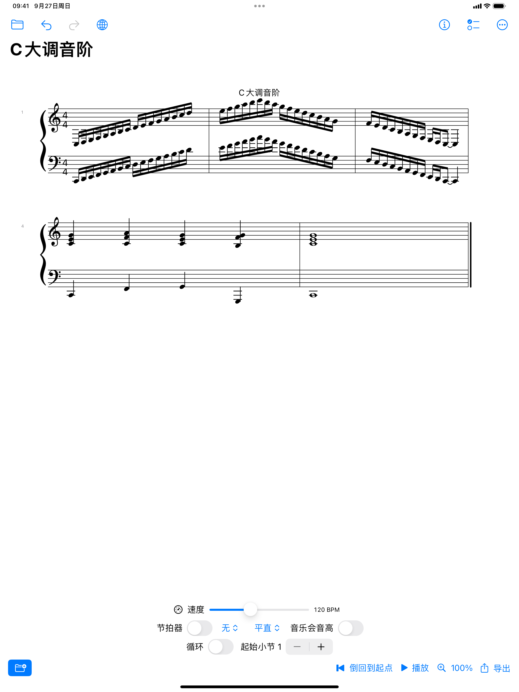

乐谱学伴儿 ScoreStudio
看谱 · 听谱 · 练琴 —— 完全离线的乐谱应用，为 iPhone 与 iPad 设计。
不需要账号 · 不需要联网 · 不申请任何权限 · 不收集任何数据




它能做什么
- 打开即看：MusicXML 三种格式（
.xml/.musicxml/ 压缩.mxl），也能直读制谱软件导出的矢量 PDF（实验性） - 按制谱规范排版：Bravura 制谱字体，符杠、连音线、装饰音、和弦符号、反复记号与多声部休止符都按规范绘制
- 开箱即有声：内置 GM 音色库，无需下载；力度、踏板、跳音、延长记号、颤音 / 回音 / 波音与倚音都会按要求演奏； 谱面写了和弦符号时会按谱面垫底发声，音量可与旋律分开调
- 走带顺手：倒回到起点、播放 / 暂停 / 继续；先点一个音符再播放，就从该小节起播
- 只读音符详情：点选音符查看音高、时值、声部与谱表、位置、演奏法、力度、歌词与和弦符号； 移调乐器（B♭ 小号 / 萨克斯）还会标出实际发声音高
- 反复与跳转：反复小节线、结尾（volta）、D.C. / D.S. al Fine、To Coda 都按谱面走
- 练琴：C / F / G 三个调（各含关系小调）的音阶、琶音与和弦练习（上下行、1–3 个八度、可带终止式），另有节拍器、变速、循环、摇摆与钢琴卷帘
为什么选择它
- 完全离线：没有账号、没有广告、没有分析统计，数据不出设备
- 免费、无内购、无订阅
- 中英文界面